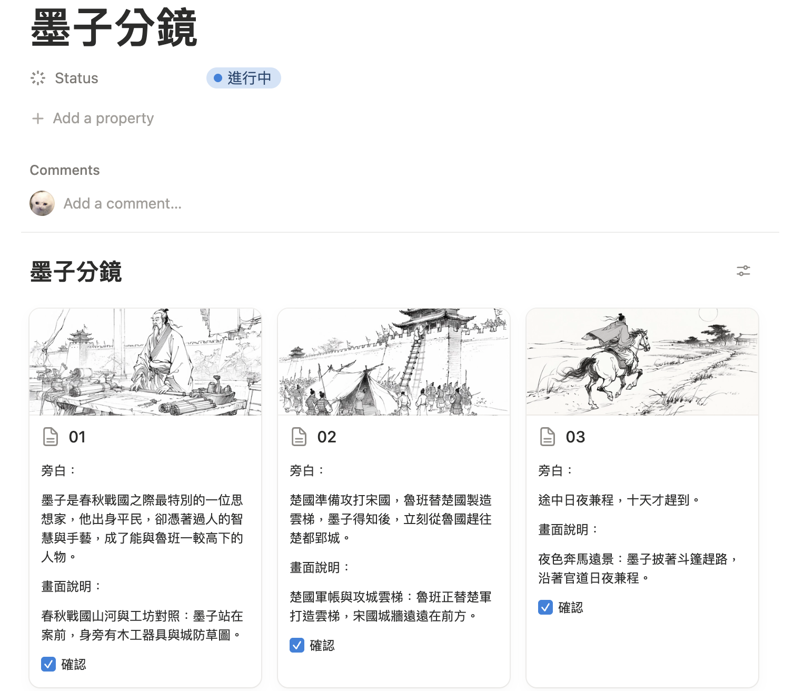
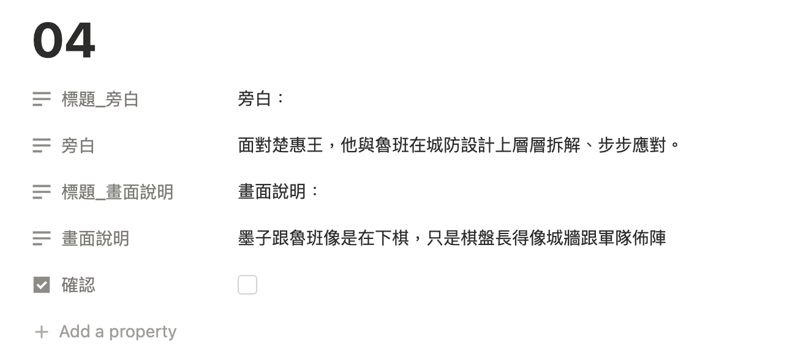
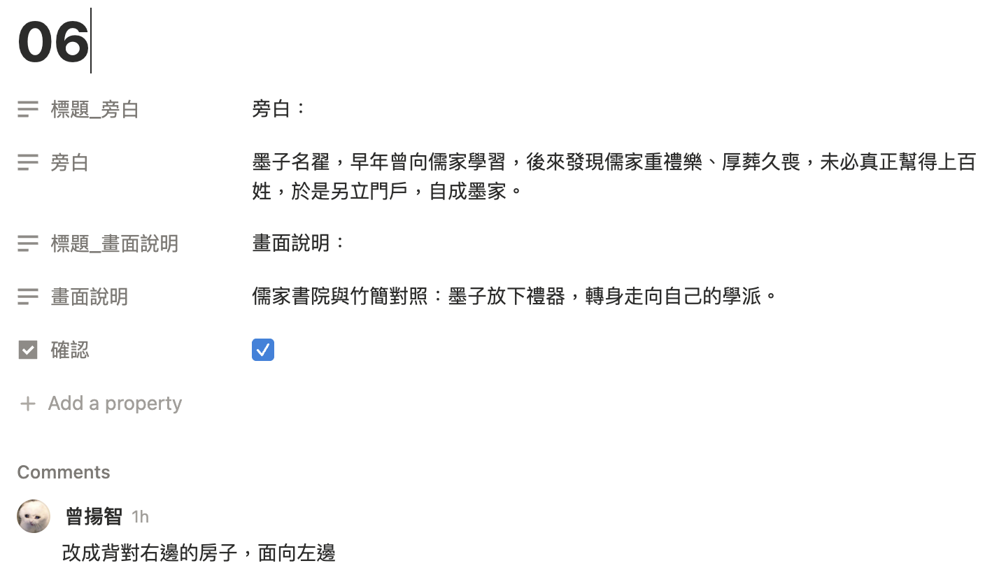
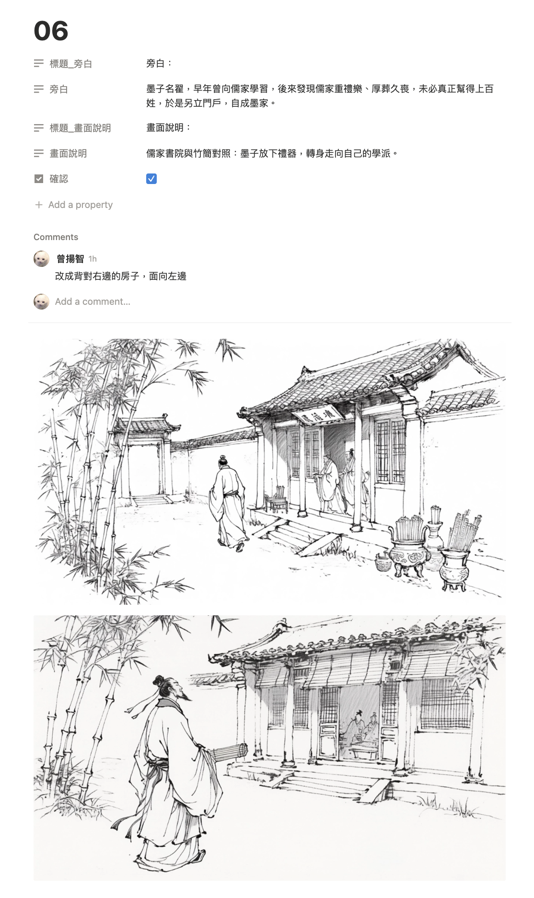
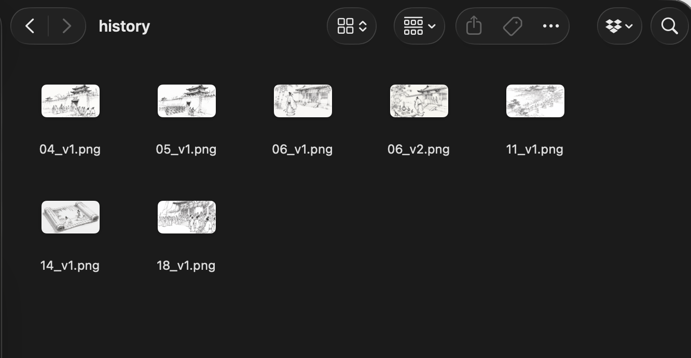
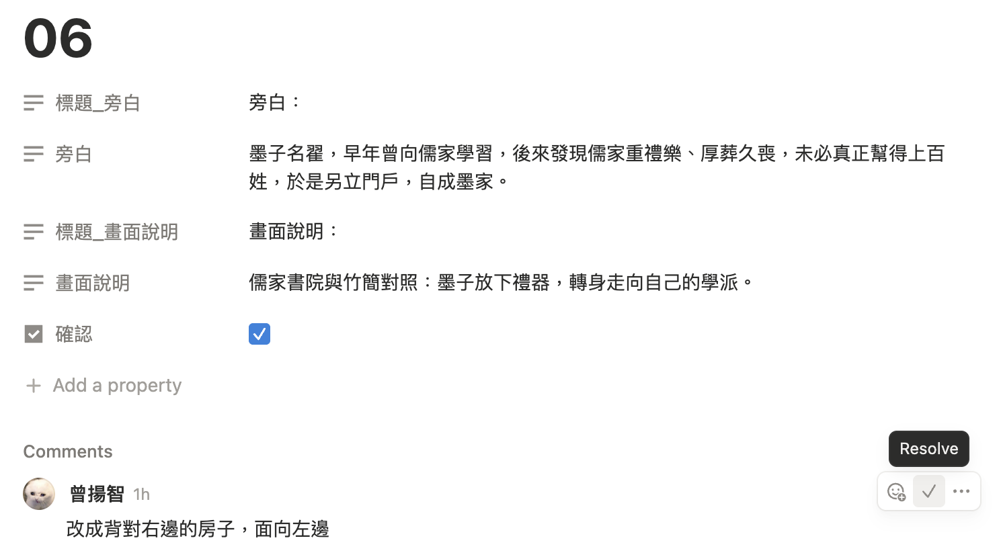

修改分鏡
分鏡出來後，可以把覺得沒問題畫面，在「確認」打勾

要修改的分鏡可以點進去，如果畫面完全不對，可以直接修改畫面說明

如果是部分要微調的，直接打在 comment 裡頭

tag Rocky 跟他說：「我們現在來修改 XX 的分鏡，他的 notion 頁面在這，請用分鏡修改的 skill 開始進行」，並且貼上 notion 專案頁給他
改好後他會直接把圖放進 notion ，dropbox 裡也會有新圖，並且把舊圖移動到 history 並加上版本號


如果改好了，就把「確認」打勾，也把 comments 打勾

反覆進行以上直到全部完成